What I built
Scope- Information architecture for Setup / Returns / Dashboard modules
- Multi-store dashboards and role-aware views
- Per-return traceability (timeline, notes, events)
- Store-specific landing pages and email tracking configuration
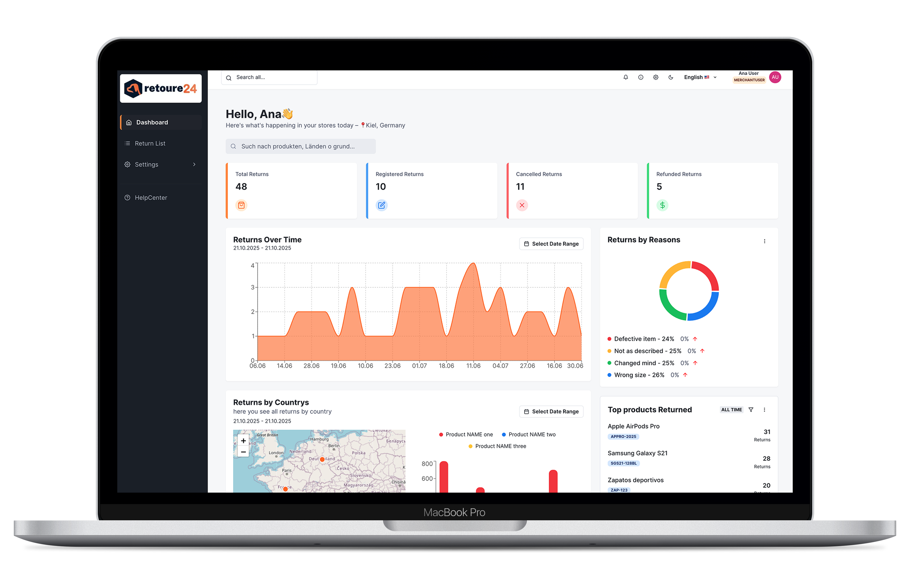
Executive summary
Retoure24 is a multi-tenant returns platform designed to bring multi-store returns, configuration and reporting into one operational system — usable for both WEMALO-integrated merchants and independent clients.
Retoure24 centralizes returns management for merchants operating multiple online stores. Instead of juggling separate tools, landing pages and spreadsheets, they get one place to configure stores, track statuses, export reports and manage communication with end customers.
Chaos in multi-store returns: decentralized tools, low visibility and manual processes.
A unified platform that connects returns, configuration and reporting, adaptable to both WEMALO-integrated merchants and independent clients.
From market benchmark to defining target users and their pain points.
Before defining the solution, I ran a comparative analysis of market tools such as ReverseLogix, Returnless, ReturnGo and Loop Returns.
Insight: the market validates a standalone returns platform that can run inside or outside the WEMALO ecosystem.
Initially, Retoure24 was conceived for merchants already using WEMALO as their WMS. Research showed that returns pain points are just as strong for independent merchants.
Merchant managing inventory via WEMALO/MyDashboard and needing returns deeply integrated into operations.
Merchant with multiple stores but no logistics backend, managing returns manually.
Setup modes
“Once the customer sends the return, I lose visibility of which step it’s in.”
“I want to manage all return landing pages from one place.”
“I track all stores in a spreadsheet and end up losing information and time.”


Design challenge: create an end-to-end platform that unifies processes, shows full traceability and scales for both integrated and independent merchants — while preserving clarity and per-store customization.
Multi-store returns were managed across too many places (emails, spreadsheets, shop backends), creating fragmented ownership and missed steps.
Status visibility broke after the customer shipped the parcel, forcing merchants to manually chase updates and check multiple systems.
Reporting became inconsistent across stores because each store had different rules, templates and tracking habits—making comparisons unreliable.
Manual duplication of data caused errors (copy/paste between tools, re-entering IDs, reasons and decisions), increasing rework and audit risk.
Configuration didn’t scale: landing pages, email templates, shippers and rules needed per store—but merchants lacked a single control center.
From architecture and flows to interface design, focusing on traceability, clarity and scalability.
Multi-store dashboard with filters & reports
Returns grouped by store, reason and status, with KPIs and exports.
Per-return traceability
Each return has a clear status timeline, notes and events.
Store-specific landing pages
One controlled entry point per store to start a return, mapped to brand and logistics rules.
I structured the platform around user intent and usage frequency:
This separation helps new users understand where to configure vs. where to operate.
Key product decisions made to balance scalability, operational clarity and long-term maintainability.
Trade-off: clarity vs scalability
I chose a global multi-store dashboard with drill-down instead of isolated store views. This avoids duplicated logic, enables cross-store comparison, and scales naturally from 1 to 20+ stores—while still allowing store-level focus when needed.
Trade-off: implementation effort vs traceability
Returns were designed around a chronological timeline (status changes, notes, events) rather than static fields. This supports auditability, collaboration, and reduces ambiguity when exceptions occur.
Trade-off: freedom vs error prevention
Operational flows were intentionally structured and state-driven to prevent invalid actions. While this limits free behavior, it significantly reduces errors and rework in high-volume return processing.
Trade-off: initial complexity vs long-term maintainability
Configuration was centralized into setup modules for stores, landing pages, emails and shippers. This avoids fragmented configuration and enables consistent scaling across stores.
Trade-off: visual freedom vs speed and consistency
Chakra UI was used as a foundation to ensure consistency, accessibility and faster implementation. Visual identity was achieved through tokens and composition rather than one-off components.
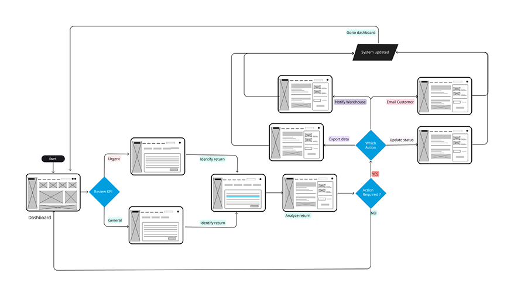
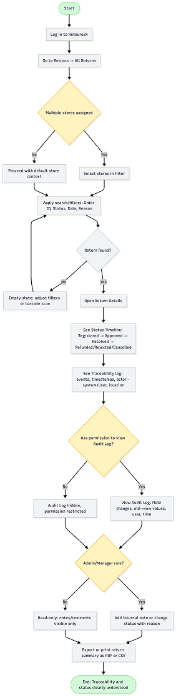
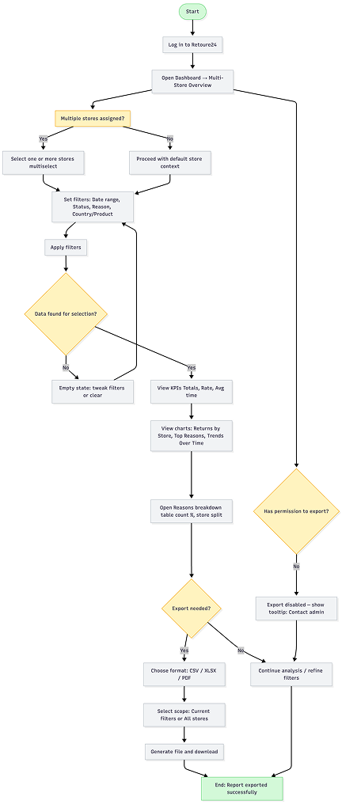
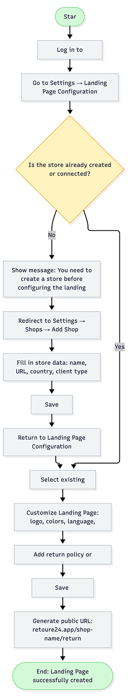
I started with low-to-mid fidelity wireframes to validate navigation, grouping and edge cases across dashboard, returns and setup.
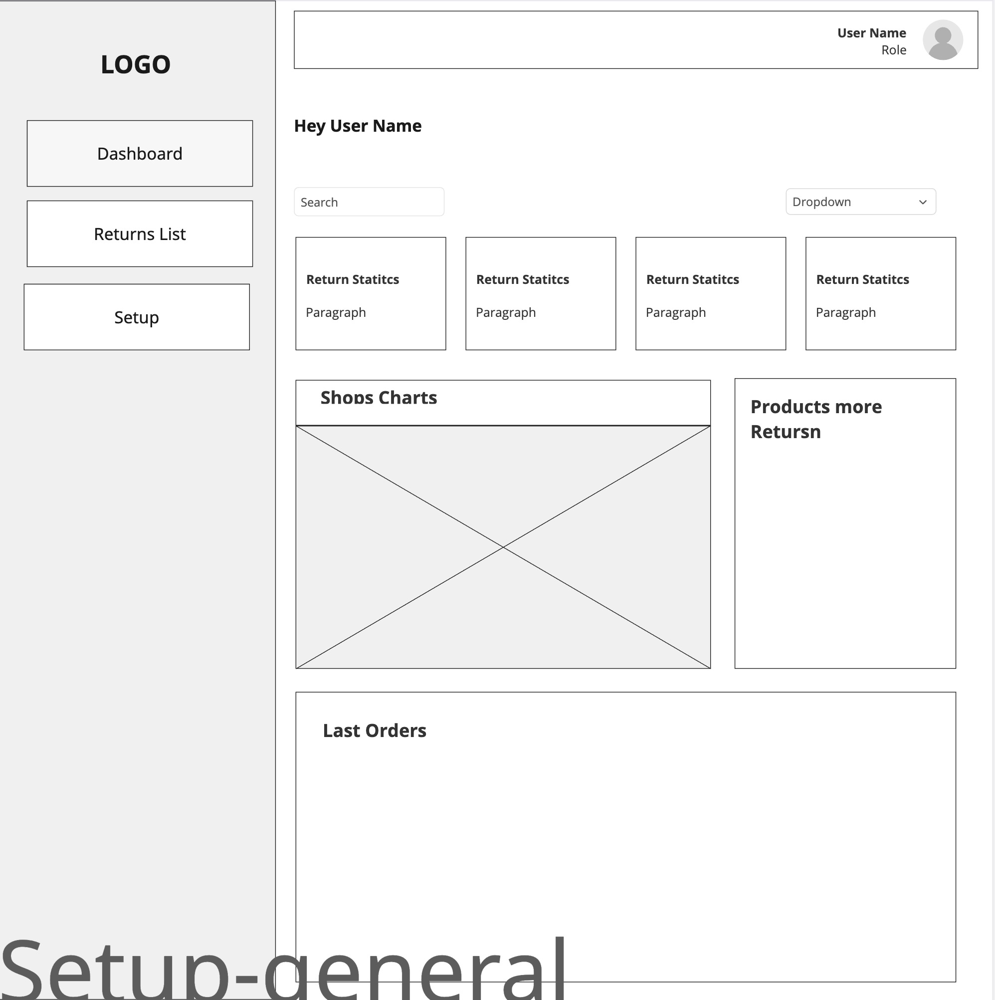
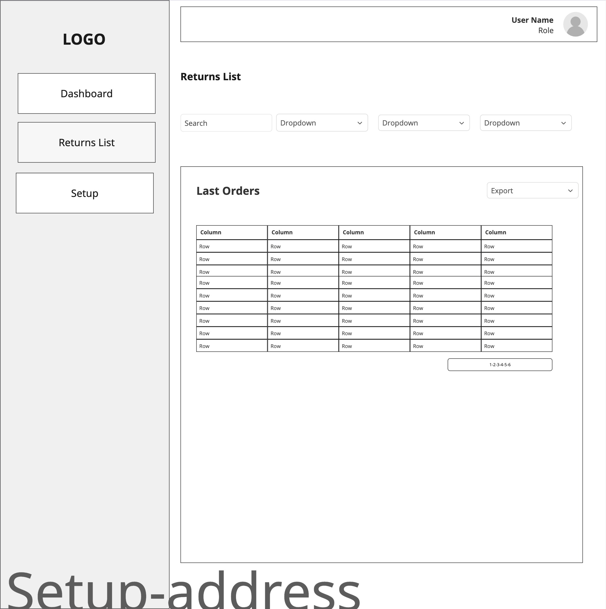
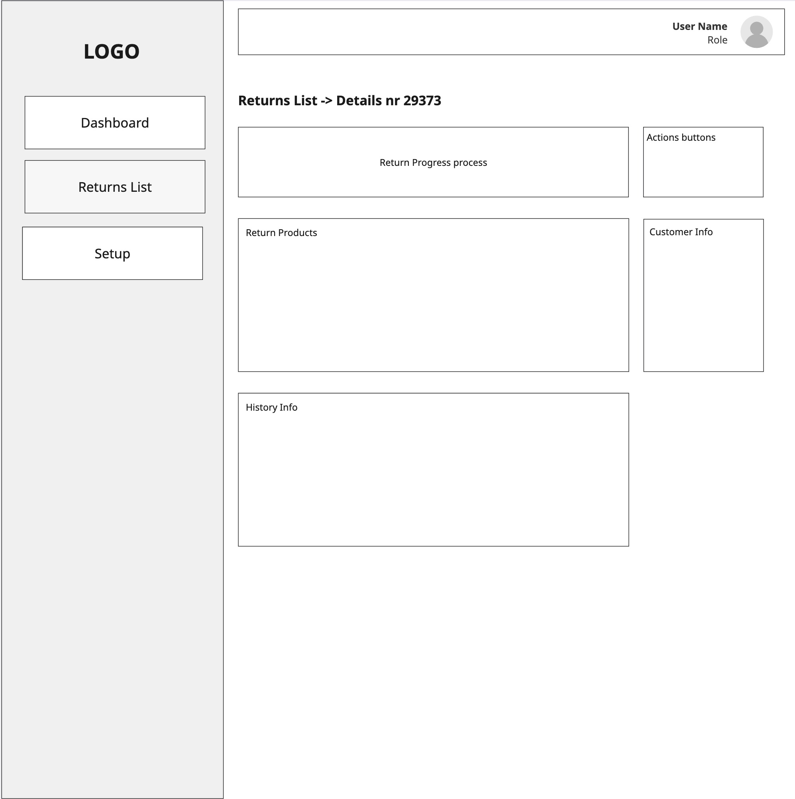
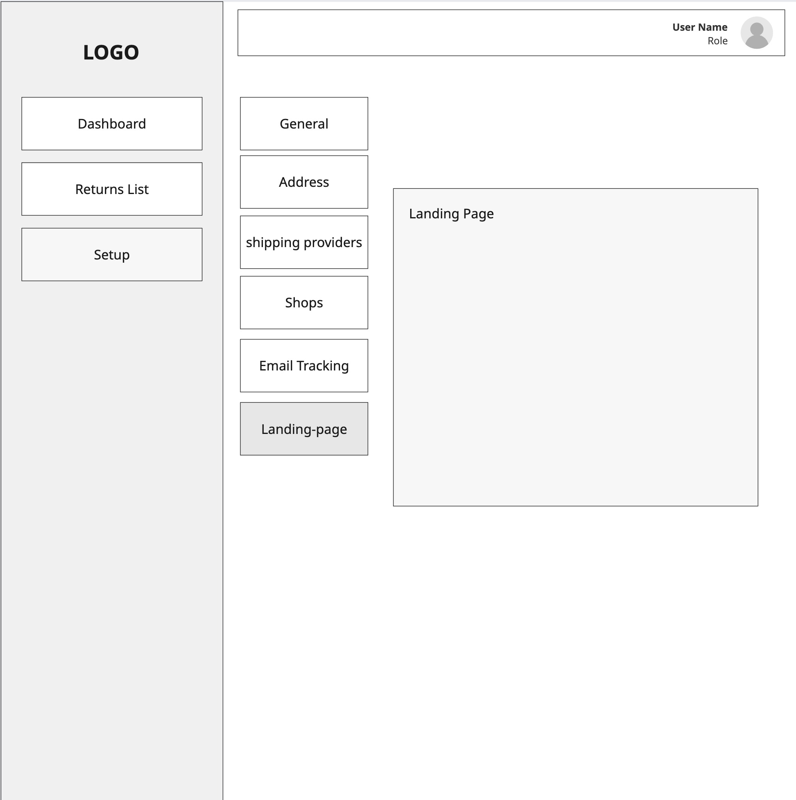
I defined a small design system for Retoure24, including color tokens, typography, elevation, states and key components reused across the app.
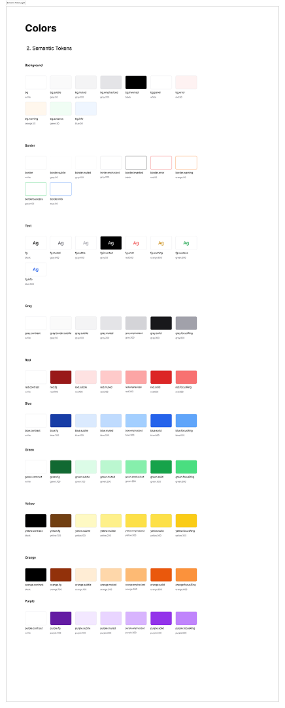
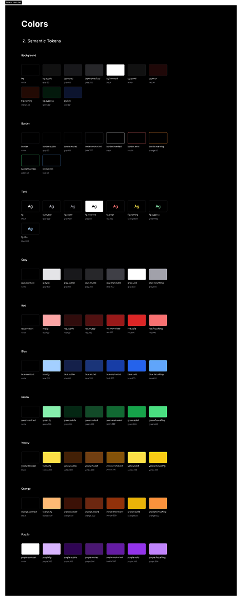
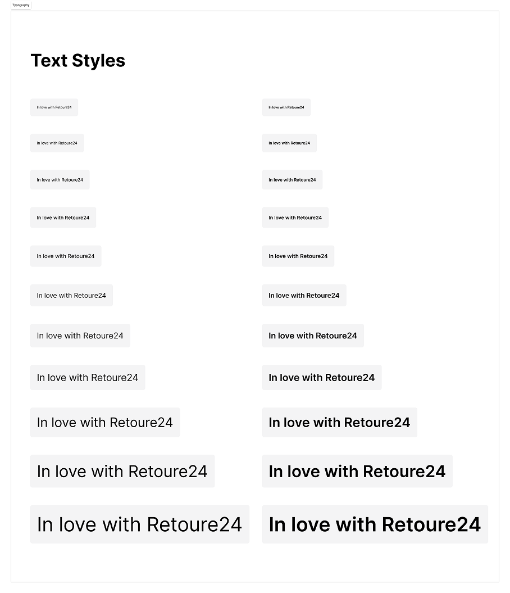
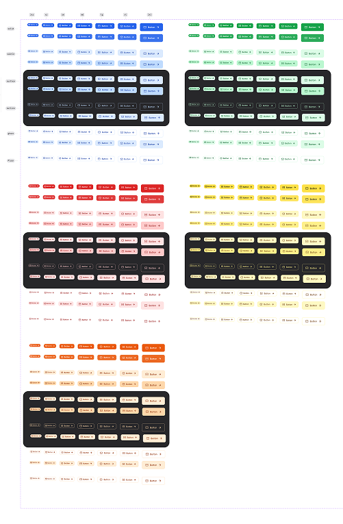
The system was designed with WCAG AA criteria from the ground up, ensuring sufficient contrast, keyboard navigation, and proper semantics in both light and dark modes.
| Component | Light Mode (Ratio) | Dark Mode (Ratio) | WCAG AA Compliant |
|---|---|---|---|
| Primary text | 12:1 ✓ | 15:1 ✓ | Yes |
| Primary button | 4.8:1 ✓ | 5.2:1 ✓ | Yes |
| Secondary button | 3.5:1 ✓ | 4.1:1 ✓ | Yes |
| Input border | 3.2:1 ✓ | 4.0:1 ✓ | Yes |
| Disabled text | 3.2:1 | 3.5:1 ✓ | Yes |
| Active icons | 4.2:1 ✓ | 4.9:1 ✓ | Yes |
Minimum ratios of 4.5:1 for text, 3:1 for UI. Parallel palettes for light/dark modes.
Visible focus states and logical tab order across all components.
Color + icon + text in critical alerts. Not relying on color alone.
The system doesn't just unify aesthetics—it ensures every feature built on it is inherently more accessible, reducing technical debt and creating a more inclusive experience.
How the final product looks and behaves in key scenarios.
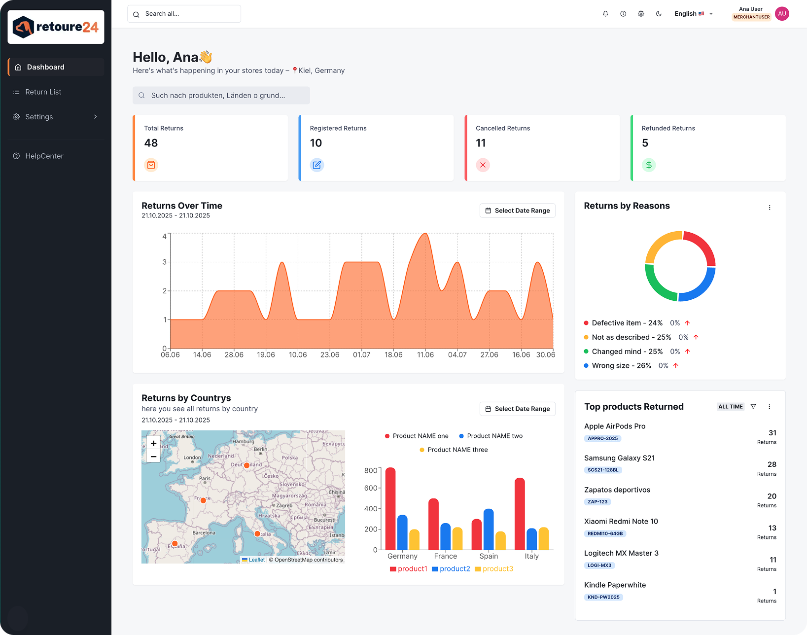
KPI and returns view focused on a single store.
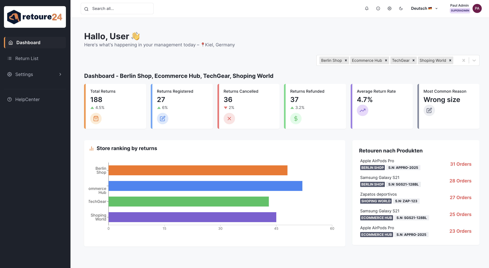
Consolidated summary with filters by store, status and reason.
Status and date filters that update list and metrics in real time.
Export CSV reports aggregated by return reason.
Update return status from “Approved” to “Rejected”.
Setup of a branded returns landing page per store.
Frontend architecture and components supporting the UX.
I structured components to be reusable across dashboards and lists.
Simple metric card used across dashboard views.
import { Box, Stat, StatLabel, StatNumber } from '@chakra-ui/react';
export default function KpiCard(){
return (
<Box p={4} borderWidth='1px' rounded='md'>
<Stat>
<StatLabel>Orders</StatLabel>
<StatNumber>1,245</StatNumber>
</Stat>
</Box>
);
}Chakra UI + Recharts component with a time-range menu for quick analysis.
return (
<Box
bg={useColorModeValue("white", "gray.800")}
p={5}
borderRadius="md"
boxShadow="sm"
borderColor={borderColor}
shadow="sm"
>
<Flex justify="space-between" align="start" mb={4}>
<Heading size="md">Returns by Reasons</Heading>
<Menu>
<MenuButton
as={IconButton}
icon={<FiMoreVertical />}
variant="ghost"
size="sm"
aria-label="Filter"
/>
<MenuList>
<MenuItem>Last 7 days</MenuItem>
<MenuItem>Last month</MenuItem>
<MenuItem>Last year</MenuItem>
</MenuList>
</Menu>
</Flex>
<ResponsiveContainer width="100%" height={200}>
<PieChart>
<Pie
data={data}
dataKey="value"
nameKey="name"
cx="50%"
cy="50%"
innerRadius={60}
outerRadius={80}
paddingAngle={2}
>
{data.map((entry, index) => (
<Cell key={`cell-${index}`} fill={entry.color} />
))}
</Pie>
</PieChart>
</ResponsiveContainer>
</Box>
);A conceptual shift from fragmented, reactive return handling to a unified operational system.
Fragmented & reactive
Unified & traceable
Validating design decisions and measuring impact.
Other products I designed in the WEMALO ecosystem.